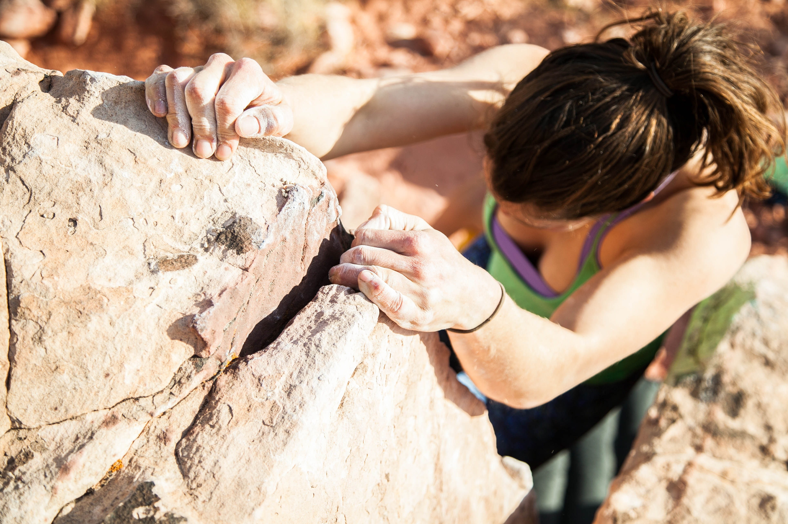

A brief history
Rock climbing has been something that humans have done throughout history as a fun way to spend time. However, rock climbing began to develop into a sport in the late 19th century. Evolving from a necessity for mountain-dwelling peoples into a recreational activity took place mostly beginning in the 1880s. Walter Parry Haskett Smith, an Englishman, is heralded as the Father of Rock Climbing after climbing to the top of Napes Needle in 1886. Over time, impressive performances by rock climbers such as Smith would inspire others to climb as well, and this caused the development of a small rock climbing community. Gradually, this small community allowed rock climbing to develop into a more established sport. This has allowed rock climbing to become increasingly popular and grow into the size that it is today.
What it looks like today
Today, rock climbing takes place in special rock climbing gyms, national parks, and athletic competitions. Climbers can choose between many varieties of climbing, including (but not limited to) top roping, bouldering, solo climbing, and lead climbing. Top roping involves climbing a route in which the rope is anchored at the top of the route while a second person holds the rope during the climber's ascent. Bouldering does not involve any ropes or safety devices and simply involves a single climber scaling a boulder or wall that is around 10-12 feet high. Solo climbing involves a climber climbing a wall or rock formation with no safety devices or assistance from other people (and is extremely dangerous). Finally, lead climbing involves two people, like top roping, except the climber is responsible for fixing the rope to a series of anchors set in the rock wall as the climber ascends the wall. In gyms, climbing walls allow for the construction of routes that have no limit beyond the route-setter's imagination. This allows for very creative climbs that would not occur naturally in real rock formations. Real formations, however, are much larger than artifical formations that can be built in gyms.